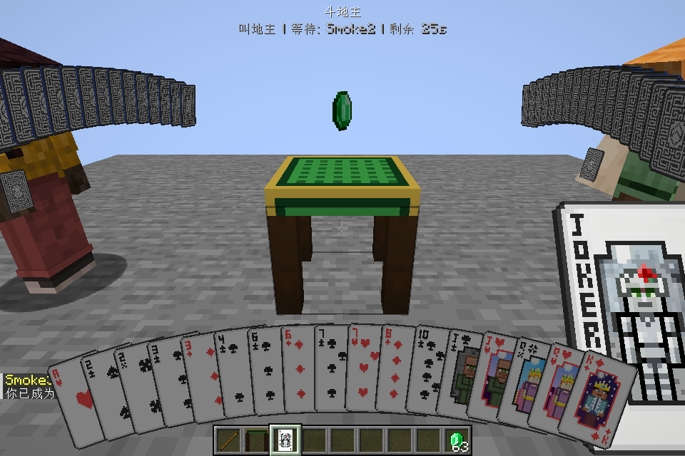
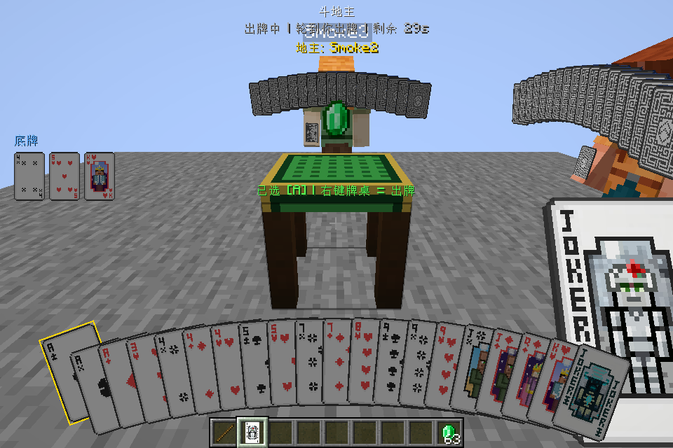
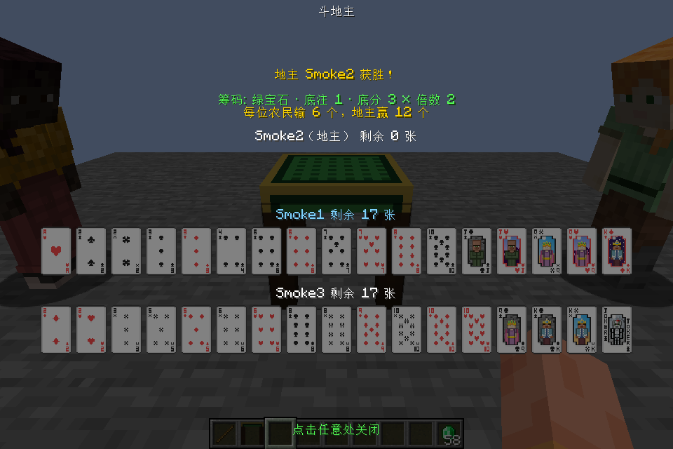

01 · How to play
三个人，一张桌，一局斗地主
不需要单独的游戏大厅。牌桌放进世界，三位玩家就在同一片场景里完成整局。
放桌与设置
合成牌桌，房主配置这张桌子的筹码或关闭筹码，选择纯娱乐局。
三人入局
三位玩家右键牌桌。坐满自动发牌：每人 17 张，底牌 3 张。
叫分与出牌
滚轮选叫分或移动焦点，左键选牌，右键牌桌确认出牌或过牌。
结算与观战
服务端计算胜负与筹码；旁观者主动开启观战，能否见牌由服务器决定。
54
张独立牌面含大小王；按照出牌规则判型与比较。
3
位真实玩家一个专用服务器和三个客户端可自动跑完整局。
61
个可配置音频键语音、音效、BGM 由独立音乐包提供；模组 jar 不含音频。
03 · In game
牌局留在世界里
以下是斗地主本地验收保存的真实客户端截图。版本间牌面锐度、全屏 HUD 比例和底牌位置仍请逐一对照。



04 · Compatibility
版本与加载器
同一套公共源码，通过版本适配层和各加载器工程构建独立 jar。客户端与服务器必须选择相同目标。
| Minecraft | NeoForge | Fabric | Forge | 备注 |
|---|---|---|---|---|
| 1.21 | 有目标包 | 有目标包 | 有目标包 | 早期六组验收之一 |
| 1.21.1 | 有目标包 | 有目标包 | 有目标包 | NeoForge 上机视觉基准 |
| 1.21.2 | 有目标包 | 有目标包 | 官方无目标发行版 | 不创建 Forge 分支 |
| 1.21.3–1.21.4 | 有目标包 | 有目标包 | 有目标包 | 物品/实体/模型 API 适配 |
| 1.21.5–1.21.8 | 有目标包 | 有目标包 | 有目标包 | 牌面渲染与 HUD API 适配 |
| 1.21.9–1.21.11 | 有目标包 | 有目标包 | 有目标包 | 渲染提交与资源变化适配 |
构建成功或自动对局 PASS 仍不等于全部图像、声音和整合包环境已人工验收。Minecraft 26.x 不在本次范围。
06 · Documentation
发布文档，一处审阅
这些文档都在本地仓库中，可逐篇复核。此页只介绍 1.0.0 已实现的内容。
项目首页 玩法、操作与配置安装与游玩 版本选择、入局、配置、排查开发与架构 公共层、加载器、版本 API、构建验证与已知边界 自动流程、人工检查与证据版本分支与发布 命名、单源维护、发布门槛素材与许可清单 贴图、模型、官方音乐包、截图贡献指南 问题报告、代码修改与验证安全问题 私密报告渠道待仓库建立后补全
发布前还需要你确认
- 源码、贴图、模型、默认音乐包各自的权利归属和公开范围。
- 历史设计稿、旧日志与截图是否全部适合公开。
- 这套介绍、版本分支、验收边界是否符合 1.0.0 实际状态。
- 审阅通过后再提供 GitHub 仓库地址；当前不会上传。
07 · Origins
来源与致谢
Crafty Cards 基于 OmbreMoon 的 PlayingCards 改造；该项目移植自 Calemi 的 Playing Cards。本项目加入斗地主联机玩法及多加载器、多版本适配，并非上游项目的官方续作。部分卡牌、筹码和方块贴图继承自上游；来源和授权核对记录请在发布前审阅。